Installation Guide
This guide provides instructions for the installation of the parts that make up the original Waconia: the data gleaners, the database, and the rosy.asp charting page. The end result is a gleaning and charting process that runs on your local network, periodically using your internet connection to glean weather data. A web browser is used to access the rosy.asp web page (from any computer on your local network) and present the data in charts.
Note that I cannot recommend serving this out through your local-network firewall. It's just fine to do this on an internal network. But this all might pose a security risk to the host computer if the Waconia web site is accessible from the internet. Having said that (my disclaimer), I did exactly that for about 20 years and served this site out through two different company firewalls. Never had a problem.
It is best if you have:
- A Windows computer (7, 8, or 10)
- It will need to be on all the time (so the gleaners can run)
- Installations (needed, but not covered here):
- Microsoft Access
- Python 2
- Perl (optional, but needed if you want to use the two gleaners that are written in Perl)
- Some basic experience with:
- Microsoft's web server (IIS)
- Setting folder permissions
- A script-file editor (like Notepad++).
Note that in 2023 I added features to the gleaners so that they can write to the Google spreadsheets which are the data source for the new charting page. Also, the Perl gleaner that collects readings from the HMS site, now uses secondary Python scripts that facilitate the page fetch and the post to the sheet. These features will only work if there is a target Google sheet. So for the gleaners to behave as they did for the original web site, those sections of the code should be disabled (commented). Someday (TBD) I may add to this page to include instructions to support the new charting page.
What follows is relative to Windows 10, but much of this stuff is very similar in Windows 7 and 8. If you've had a good breakfast, this installation exercise might serve as a useful introduction to server-sided scripting. This is not an extremely detailed walkthrough. It will cover the needed steps and should be enough to get you up and running.
Get the files you will need
Create a new folder called "webcontent" in your
documents area of Windows. Download the waconia.zip file at this
Google-drive link. Unzip it and then copy or move the waconia folder
(and everything in it) so as to be a subfolder in the webcontent folder. So
the path to the website-dev folder should look something like this (of
course the username in the path should be changed):
C:\Users\Jim\Documents\webcontent\waconia\website-dev
Install IIS
IIS is part of Windows 10; it needs to be enabled (turn on the feature). Also check the ASP option (see yellow highlight).
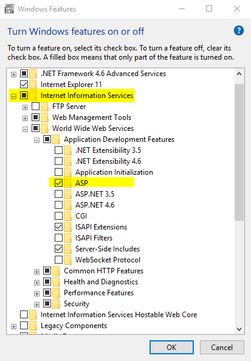
Configure IIS for Classic ASP and 32 bit processes
Open up the IIS manager (click on the Windows icon in the start menu and then type IIS).
Add a new application pool. Call it "oldASP".
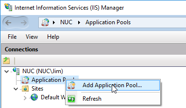
Host the application in a "Classic"
pipeline-mode application pool. Choose "No Managed Code" and "Classic".

In the "Advanced Settings" of your oldASP application pool, set
"Enable 32-Bit Applications" to True.
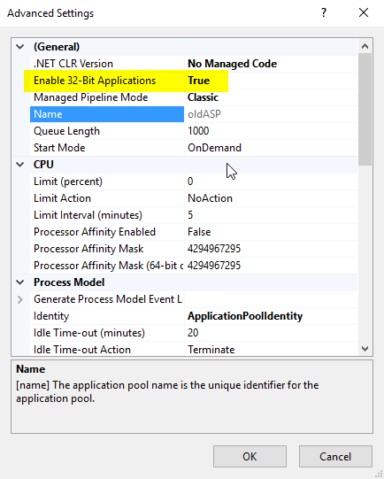
Add applications under the default website in IIS
In the IIS manager, right-click on the "Default Web Site" and choose to "add an Application."
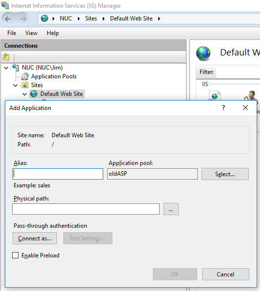
For your development site, enter "waconia-dev" (fill in the Alias field). Then provide the path to the development folder that contains the rosy.asp. So for example, my path string is "C:\Users\Jim\Documents\webcontent\waconia\website-dev". Select the oldASP application pool.
To force detailed-error reporting, open
the ASP feature (double-click on the ASP icon) for the website.
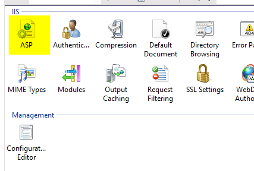
Then expand the "Debugging Properties" node. Set "Send Errors To Browser" to
True.
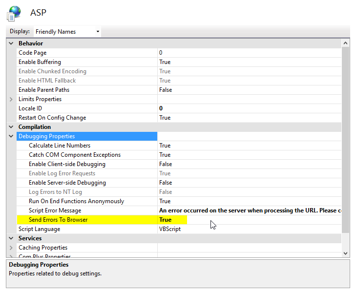
You may want to repeat this section for a production site (that you publish to) and call this production site simply "waconia". Enter a path string here that points to the production folder. Again, select the oldASP application pool.
Install and test the ASPChart software
Register the ASPChart dll:
- Copy the aspchart.dll file from the ASPChart-install-files folder
and put it in this folder:
C:\Windows\SysWOW64
- Type "cmd" from the windows menu. Right click on the "Command
Prompt" option. Then choose to open a command
window as an administrator.
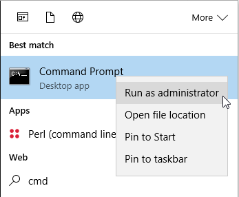
Then from that administrator window, run the following command:
C:\Windows\SysWOW64\regsvr32.exe C:\Windows\SysWOW64\aspchart.dll
Add the license code to your registry:
- Open regedit (from the Windows menu, type "regedit")
- Use import feature of regedit (File/Import) to load in the
aspchart-regkey.reg file from the ASPChart-install-files folder. There's nothing scary in there, just a license
code. Here's an image of what's in the file.
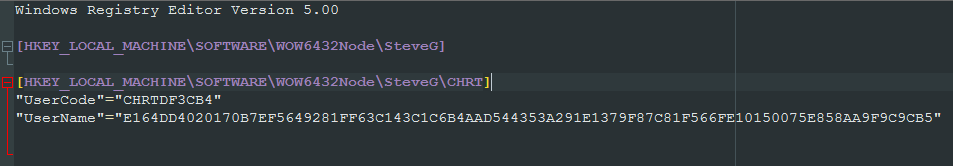
Set security permissions on the chart-images folder:
You have to give your webbrowser permission to write
to the chart-images folder. So give both the IIS_IUSRS and IUSR users
"Modify" level of permissions.
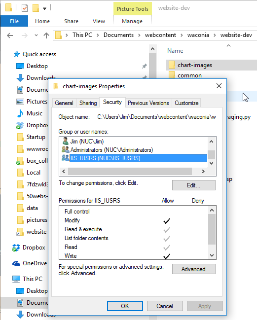
Test it:
- Test your general ASP setup from a web browser (use your own local
IP address and site name). This page will check to see if ASP content
can run on your web server.
http://192.168.1.106/waconia-dev/whatserveristhis.asp
It should look something like this:
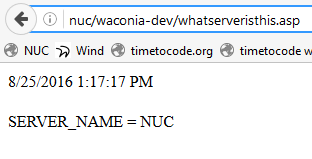
- Test your AspChart installation from a web browser. This page will
test the AspChart dll and the permissions set on the chart-images
folder.
http://192.168.1.106/waconia-dev/aspchart-test.asp
(Here's a look at the ASP code for this test page.)
The page should render something like this:
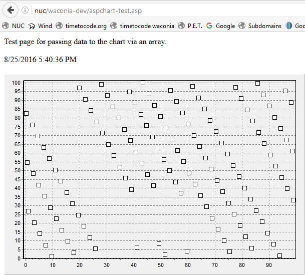
Set permissions for the data folder
In a way similar to what was done for the chart-images folder, give both the IIS_IUSRS and IUSR users "Modify" level of permissions on the "data" folder. You might be tempted to use a lower level of authority here because you will only be reading (querying) the database, but MS Access is picky about variation in authority levels between users. Problems can occur if you have a network user querying the database while you (as an administrator) are interacting with the database on the host machine. Just use the "Modify" level.
Edit the headers.asp file
Open the headers.asp file in an editor. Change the name
values in the following lines of code (change "NUC" and the IP address).
Also change the path to the telem.mdb database.
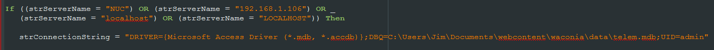
If using MS Office 365:
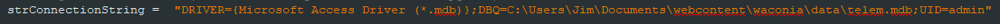
Test and schedule the gleaners
Each of the four gleaner scripts has a single line of code that establishes the path to the database. Edit this DSN string in each file to reflect your path to the telem.mdb database.
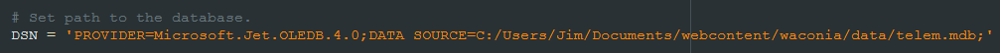
Try running each of the four gleaners from a Windows
command prompt. These will send text to the command window indicating
progress. The gleaners will not run correctly unless you have the necessary
Perl and Python modules installed (see the top of each file) and the paths
to the database have been updated (edited) in each file.
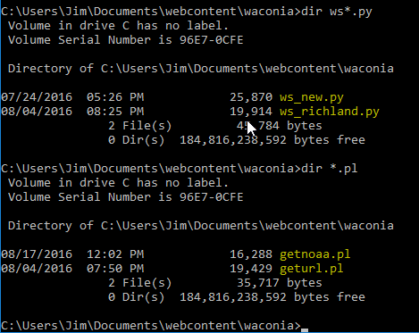
Make a scheduled task for the geturl_NUC.bat batch file.
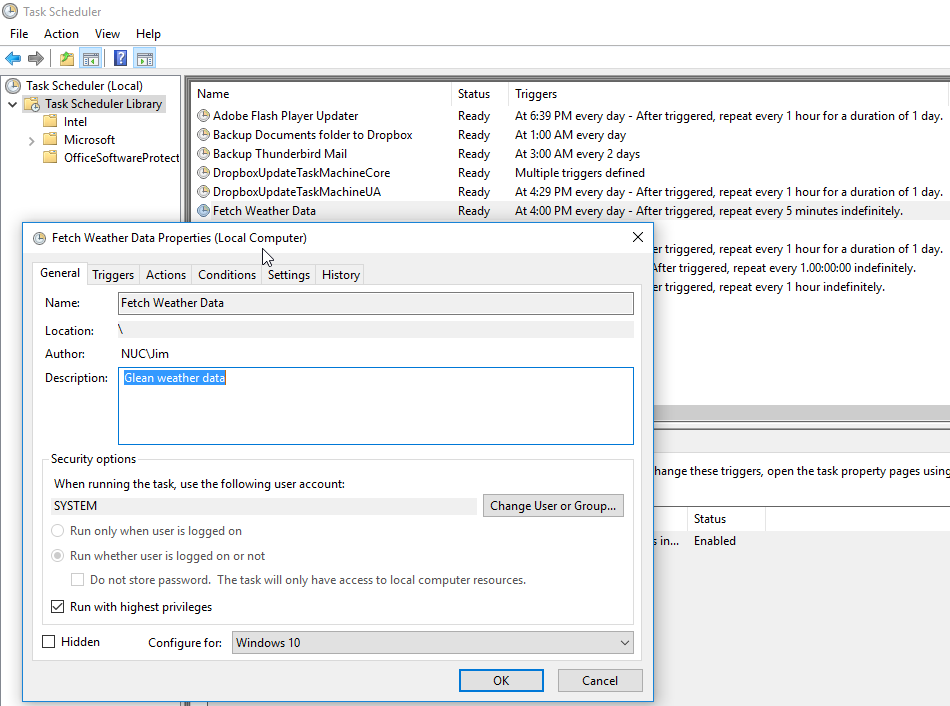
Set the trigger to fire every five minutes.
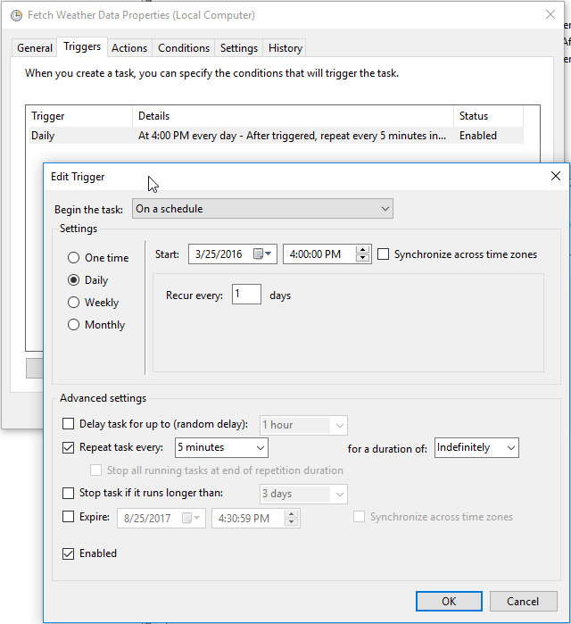
Set the path to the target file (geturl_NUC.bat) that
will run periodically.
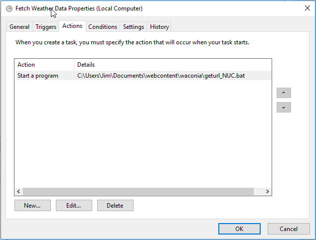
Enjoy your website
Now try entring a URL (something like this one) into
your browser:
http://192.168.1.106/waconia-dev/rosy.asp?Region=MN
Of course use
your actual local-network IP address and your site name in the URL. Then
just interact with the chart controls at the top of the web page.
Wow, you have made it to the enjoyment section. Nice job! That was a lot of settings to get right.
There's not much to do as far as maintenance. Someday you might need to check the log files in the waconia folder...
Soon, you may want to add a new weather station to your gleaning process. There are two spots where you have to specify a new station: at the end of the appropriate gleaner-script file, and in the StationNames table in the database.
Have fun looking at your custom weather data site. My neice Chelsea once said I'm like her dad (my brother Dave) in my interest in weather data. (You could substitute "obsession with" for "interest in" here. I kind of think that's what she was thinking.)
If you have some luck with this (or not), I'll respond to e-mail sent to my contact email address.
Here's what your single-day charts will look like once you're up and running:
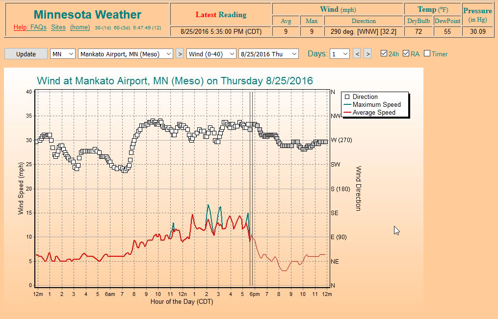